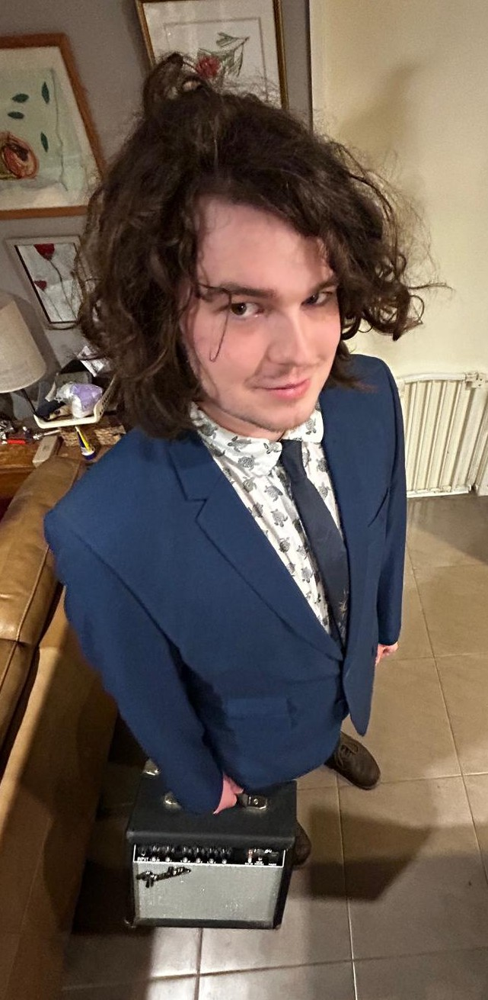

Career outlook
I want to be an industrial designer, I want to make cool stuff and stuff that helps people. I love
to make things, and work with my hands and it is so fun to see something you made come together and
work.
I feel like as a designer I will need to make a lot of ethical decisions about what I make and what
I wont make. I hope to find a way to make what I want to make without hurting people and the
environment.
To build towards this goal I'm going to keep making stuff that makes me happy and makes other people
happy, silly instruments, and what not. I am going to keep learning from others and focus on my
confidence becoming a stronger designer.

I feel like i have answered this 5 times